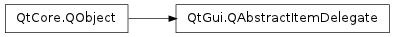
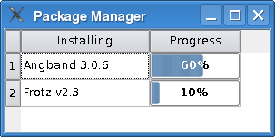

QAbstractItemDelegate ¶

Inherited by: QItemDelegate , QSqlRelationalDelegate , QStyledItemDelegate
Detailed Description ¶
The PySide.QtGui.QAbstractItemDelegate class is used to display and edit data items from a model.
A PySide.QtGui.QAbstractItemDelegate provides the interface and common functionality for delegates in the model/view architecture. Delegates display individual items in views, and handle the editing of model data.
The PySide.QtGui.QAbstractItemDelegate class is one of the Model/View Classes and is part of Qt’s model/view framework .
To render an item in a custom way, you must implement PySide.QtGui.QAbstractItemDelegate.paint() and PySide.QtGui.QAbstractItemDelegate.sizeHint() . The PySide.QtGui.QItemDelegate class provides default implementations for these functions; if you do not need custom rendering, subclass that class instead.
We give an example of drawing a progress bar in items; in our case for a package management program.
We create the WidgetDelegate class, which inherits from PySide.QtGui.QStyledItemDelegate . We do the drawing in the PySide.QtGui.QAbstractItemDelegate.paint() function:
class WidgetDelegate (QStyledItemDelegate): # ... def paint(painter, option, index): if index.column() == 1: progress = index.data().toInt() progressBarOption = QStyleOptionProgressBar() progressBarOption.rect = option.rect progressBarOption.minimum = 0 progressBarOption.maximum = 100 progressBarOption.progress = progress progressBarOption.text = QString::number(progress) + "%" progressBarOption.textVisible = True QApplication.style().drawControl(QStyle.CE_ProgressBar, progressBarOption, painter) else: QStyledItemDelegate.paint(self, painter, option, index)Notice that we use a PySide.QtGui.QStyleOptionProgressBar and initialize its members. We can then use the current PySide.QtGui.QStyle to draw it.
To provide custom editing, there are two approaches that can be used. The first approach is to create an editor widget and display it directly on top of the item. To do this you must reimplement PySide.QtGui.QAbstractItemDelegate.createEditor() to provide an editor widget, PySide.QtGui.QAbstractItemDelegate.setEditorData() to populate the editor with the data from the model, and PySide.QtGui.QAbstractItemDelegate.setModelData() so that the delegate can update the model with data from the editor.
The second approach is to handle user events directly by reimplementing PySide.QtGui.QAbstractItemDelegate.editorEvent() .
See also
Model/View Programming PySide.QtGui.QItemDelegate Pixelator Example PySide.QtGui.QStyledItemDelegate PySide.QtGui.QStyle
- class PySide.QtGui. QAbstractItemDelegate ( [ parent=None ] ) ¶
-
Parameters: parent – PySide.QtCore.QObject Creates a new abstract item delegate with the given parent .
- PySide.QtGui.QAbstractItemDelegate. EndEditHint ¶
-
This enum describes the different hints that the delegate can give to the model and view components to make editing data in a model a comfortable experience for the user.
Constant Description QAbstractItemDelegate.NoHint There is no recommended action to be performed. These hints let the delegate influence the behavior of the view:
Constant Description QAbstractItemDelegate.EditNextItem The view should use the delegate to open an editor on the next item in the view. QAbstractItemDelegate.EditPreviousItem The view should use the delegate to open an editor on the previous item in the view. Note that custom views may interpret the concepts of next and previous differently.
The following hints are most useful when models are used that cache data, such as those that manipulate data locally in order to increase performance or conserve network bandwidth.
Constant Description QAbstractItemDelegate.SubmitModelCache If the model caches data, it should write out cached data to the underlying data store. QAbstractItemDelegate.RevertModelCache If the model caches data, it should discard cached data and replace it with data from the underlying data store. Although models and views should respond to these hints in appropriate ways, custom components may ignore any or all of them if they are not relevant.
- PySide.QtGui.QAbstractItemDelegate. closeEditor ( editor [ , hint=NoHint ] ) ¶
-
Parameters: - editor – PySide.QtGui.QWidget
- hint – PySide.QtGui.QAbstractItemDelegate.EndEditHint
- PySide.QtGui.QAbstractItemDelegate. commitData ( editor ) ¶
-
Parameters: editor – PySide.QtGui.QWidget
- PySide.QtGui.QAbstractItemDelegate. createEditor ( parent , option , index ) ¶
-
Parameters: - parent – PySide.QtGui.QWidget
- option – PySide.QtGui.QStyleOptionViewItem
- index – PySide.QtCore.QModelIndex
Return type: Returns the editor to be used for editing the data item with the given index . Note that the index contains information about the model being used. The editor’s parent widget is specified by parent , and the item options by option .
The base implementation returns 0. If you want custom editing you will need to reimplement this function.
The returned editor widget should have Qt.StrongFocus ; otherwise, PySide.QtGui.QMouseEvent s received by the widget will propagate to the view. The view’s background will shine through unless the editor paints its own background (e.g., with PySide.QtGui.QWidget.setAutoFillBackground() ).
- PySide.QtGui.QAbstractItemDelegate. editorEvent ( event , model , option , index ) ¶
-
Parameters: - event – PySide.QtCore.QEvent
- model – PySide.QtCore.QAbstractItemModel
- option – PySide.QtGui.QStyleOptionViewItem
- index – PySide.QtCore.QModelIndex
Return type: PySide.QtCore.bool
When editing of an item starts, this function is called with the event that triggered the editing, the model , the index of the item, and the option used for rendering the item.
Mouse events are sent to PySide.QtGui.QAbstractItemDelegate.editorEvent() even if they don’t start editing of the item. This can, for instance, be useful if you wish to open a context menu when the right mouse button is pressed on an item.
The base implementation returns false (indicating that it has not handled the event).
- PySide.QtGui.QAbstractItemDelegate. helpEvent ( event , view , option , index ) ¶
-
Parameters: - event – PySide.QtGui.QHelpEvent
- view – PySide.QtGui.QAbstractItemView
- option – PySide.QtGui.QStyleOptionViewItem
- index – PySide.QtCore.QModelIndex
Return type: PySide.QtCore.bool
Whenever a help event occurs, this function is called with the event view option and the index that corresponds to the item where the event occurs.
Returns true if the delegate can handle the event; otherwise returns false. A return value of true indicates that the data obtained using the index had the required role.
For QEvent.ToolTip and QEvent.WhatsThis events that were handled successfully, the relevant popup may be shown depending on the user’s system configuration.
See also
- PySide.QtGui.QAbstractItemDelegate. paint ( painter , option , index ) ¶
-
Parameters: - painter – PySide.QtGui.QPainter
- option – PySide.QtGui.QStyleOptionViewItem
- index – PySide.QtCore.QModelIndex
This pure abstract function must be reimplemented if you want to provide custom rendering. Use the painter and style option to render the item specified by the item index .
If you reimplement this you must also reimplement PySide.QtGui.QAbstractItemDelegate.sizeHint() .
- PySide.QtGui.QAbstractItemDelegate. setEditorData ( editor , index ) ¶
-
Parameters: - editor – PySide.QtGui.QWidget
- index – PySide.QtCore.QModelIndex
Sets the contents of the given editor to the data for the item at the given index . Note that the index contains information about the model being used.
The base implementation does nothing. If you want custom editing you will need to reimplement this function.
- PySide.QtGui.QAbstractItemDelegate. setModelData ( editor , model , index ) ¶
-
Parameters: - editor – PySide.QtGui.QWidget
- model – PySide.QtCore.QAbstractItemModel
- index – PySide.QtCore.QModelIndex
Sets the data for the item at the given index in the model to the contents of the given editor .
The base implementation does nothing. If you want custom editing you will need to reimplement this function.
- PySide.QtGui.QAbstractItemDelegate. sizeHint ( option , index ) ¶
-
Parameters: - option – PySide.QtGui.QStyleOptionViewItem
- index – PySide.QtCore.QModelIndex
Return type: This pure abstract function must be reimplemented if you want to provide custom rendering. The options are specified by option and the model item by index .
If you reimplement this you must also reimplement PySide.QtGui.QAbstractItemDelegate.paint() .
- PySide.QtGui.QAbstractItemDelegate. sizeHintChanged ( arg__1 ) ¶
-
Parameters: arg__1 – PySide.QtCore.QModelIndex
- PySide.QtGui.QAbstractItemDelegate. updateEditorGeometry ( editor , option , index ) ¶
-
Parameters: - editor – PySide.QtGui.QWidget
- option – PySide.QtGui.QStyleOptionViewItem
- index – PySide.QtCore.QModelIndex
Updates the geometry of the editor for the item with the given index , according to the rectangle specified in the option . If the item has an internal layout, the editor will be laid out accordingly. Note that the index contains information about the model being used.
The base implementation does nothing. If you want custom editing you must reimplement this function.